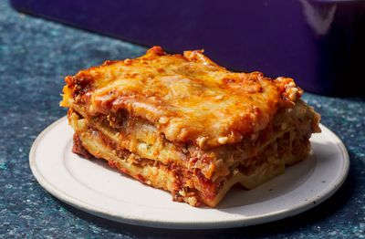

Receita de Lasanha

Home
Receita de Lasanha Caseira
Lasanha apetitosa e simples
Ingredientes
- Carne
- Cebola e Alho
- Açucar
- Temperos: salsa fresca, folhas de manjericão secas, sal, tempero italiano, sementes de erva-doce e pimenta-do-reino.
- Massa de Lasanha
- Queijo
- Ovos
Passo-a-Passo
- Primeiro coloque o tempero da carne
- Massa da Lasanha
- Mistura de Ricotta
- Fatias de Mozarella
- Tempero da carne novamente
- Queijo parmesão
- Repita as camadas, e finalize na ultima camada com Parmesão
Quanto tempo de cozimento?
A lasanha montada deve levar cerca de 50 minutos para assar em forno preaquecido a 190 °C. Cubra com papel-alumínio pelos primeiros 25 minutos e deixe assar sem tampa pelos últimos 25 minutos. Além disso, é importante deixar a lasanha descansar em temperatura ambiente por cerca de 15 minutos antes de cortá-la.